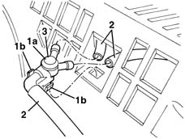

5050B14 PIPES and connectors for front windscreen washer. - R.R.
- Path
- Procedures > 50 AUXILIARY UNITS > 5050 SCREEN WASHERS AND HEADLAMP WASH/WIPE > 5050B windscreen wash/wipe > 5050B14 PIPES and connectors for front windscreen washer. - R.R.
- Kind
- repair procedure (removal / refitting; the operation number is the code)
- Applies to
- all engines; all production periods
- Interactive page
- https://sloeber94.github.io/elrnDB-lYpsln/en/#/2429347
Applies to: all engines; all production periods
 Removing
Removing
 Refitting
Refitting5050B34 windscreen wiper arm/s complete with blade - r+r
7210E22 R.R. WINDSCREEN BASE TRIM
1. Release the three-way fitting (1a) by undoing retainers (1b).
2. Disconnect the screen washer fluid pipe from the three-way fitting.
3. Recover the three-way connector.

Applies to: all engines; all production periods
Refitting
RemovingCheck that the connector is undamaged.
Connect the pipes to the connector.
Position the connector using retainers.
7210E22 R.R. WINDSCREEN BASE TRIM
5050B34 windscreen wiper arm/s complete with blade - r+r
Test the operation of the windscreen washer.